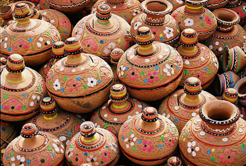
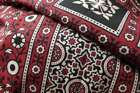
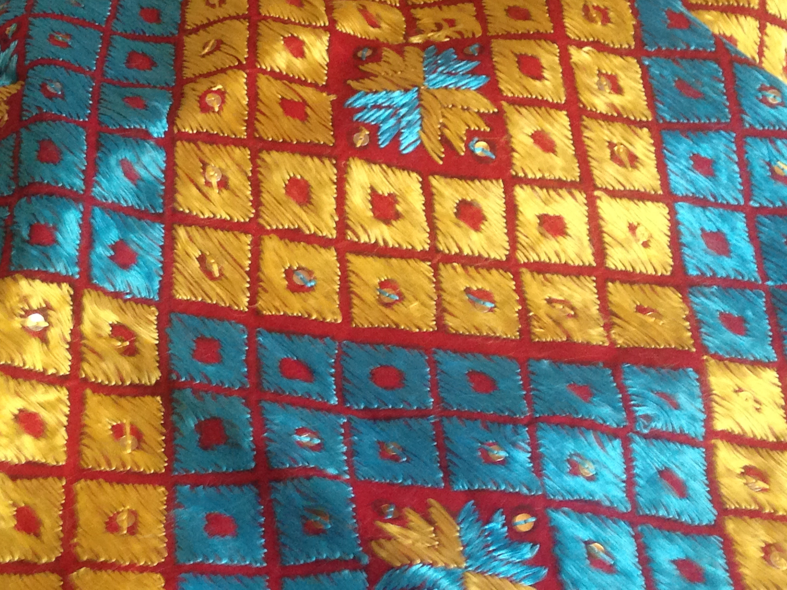
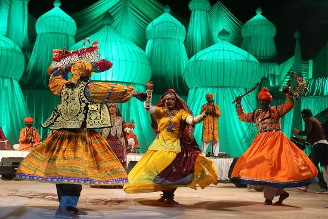

Pakistani Traditions
Pakistani culture is a blend of ancient civilisations, Islamic traditions, and regional diversity. From the Indus Valley Civilisation to the Mughal Empire, each era has left its mark on the customs, arts, and social life of the people.
Hospitality — known as mehman-nawazi — is considered a sacred duty. Guests are welcomed with warmth, tea, and food, reflecting the deeply communal nature of Pakistani society.

Islamic Art & Architecture
Pakistan is home to some of the most magnificent examples of Islamic art and architecture in the world. The Badshahi Mosque and Lahore Fort stand as testaments to the grandeur of the Mughal era. The intricate tile work, calligraphy, and geometric patterns found throughout these structures represent a high point of artistic achievement.
Did You Know?
The Lahore Fort contains 21 notable monuments dating to the era of Emperor Akbar, including structures featuring both Islamic and Hindu motifs.
Traditional Clothing
Shalwar Kameez
The national dress of Pakistan, worn by both men and women in countless regional styles and fabrics.

Ajrak
A traditional block-printed shawl from Sindh, recognised by UNESCO as Intangible Cultural Heritage.

Phulkari
Embroidered textiles from Punjab featuring vibrant floral patterns stitched by hand.
Music & Dance
Pakistani music is extraordinarily diverse. Classical music follows the Hindustani tradition, while Qawwali — devotional Sufi music — has been elevated to world fame by artists like Nusrat Fateh Ali Khan.
Folk music varies dramatically by region: the Bhangra of Punjab, the Attan dance of Khyber Pakhtunkhwa, and the Sindhi folk songs each reflect distinct regional identities.
- Qawwali — Sufi devotional music
- Ghazal — lyrical poetry set to music
- Bhangra — lively folk dance from Punjab
- Attan — traditional Pashtun group dance
- Classical — rooted in the Hindustani tradition

Cultural Heritage Sites
Pakistan is home to six UNESCO World Heritage Sites, including the ruins of Mohenjo-daro, the Lahore Fort, the Badshahi Mosque, and the ancient city of Taxila. These sites draw historians, archaeologists, and tourists from around the world.
Pakistan is home to six UNESCO World Heritage Sites and boasts over 5,000 years of continuous urban history. The country is divided into four major cultural regions — Punjab, Sindh, Khyber Pakhtunkhwa, and Balochistan — each with its own distinct traditions, art forms, and customs. With more than 70 languages spoken across the country, Pakistan stands as one of the most linguistically and culturally diverse nations in the world.